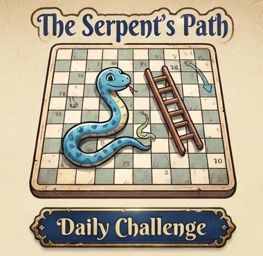

Play Snakes and Ladders Online – A Classic Board Game Experience
Rediscover a familiar dice game with a quick guide to the board and its rules.

Some games never go out of style. Snakes and Ladders is one of those timeless board games, bringing excitement through simple rules and unpredictable gameplay. Roll the dice, move your game piece across the board, and try to reach the final square. A ladder can take you ahead, while a snake can send you backwards.
That combination of luck and surprise makes each round different. You can try the Crossworld Snakes & Ladders game in your browser.
What Makes Snakes and Ladders So Enjoyable?
- Simple gameplay: The basic rules are easy to understand.
- Unexpected outcomes: A dice roll can change your position.
- Classic entertainment: The familiar board game is fun to revisit.
- Accessible play: Players can focus on taking turns and following the board.
- Excitement: One snake or ladder can change the race.
How to Play Snakes and Ladders
- Start at the beginning of the board.
- Roll the die and move your game piece according to the result.
- Climb a ladder when you land on its starting position.
- Move down the board when you encounter a snake.
- Continue taking turns until a player reaches the winning position.
Always follow the specific rules displayed in the game you are playing.
Why Classic Board Games Still Matter
Modern gaming offers many experiences, but classic board games continue to attract players because they are easy to learn and enjoyable to revisit. Snakes and Ladders shows how a simple idea can create unpredictable moments. Whether you are revisiting a childhood favourite or discovering the game for the first time, it offers a refreshing break from more complicated games.
Frequently Asked Questions
Is Snakes and Ladders a game of luck or strategy?
Traditional Snakes and Ladders is primarily based on dice rolls and luck.
How many players can play?
The number of players depends on the particular game implementation and mode.
Is Snakes and Ladders suitable for children?
Its simple rules make it an accessible family-friendly board game.
Ready to Roll the Dice?
Bring back the excitement of a classic board game. Explore Snakes and Ladders on Crossworld and discover where your next dice roll takes you.